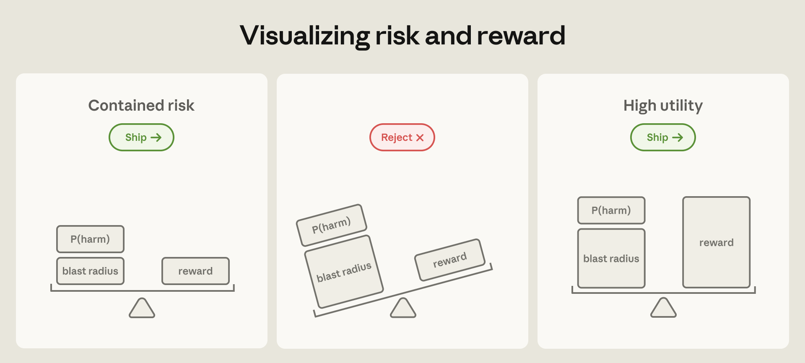
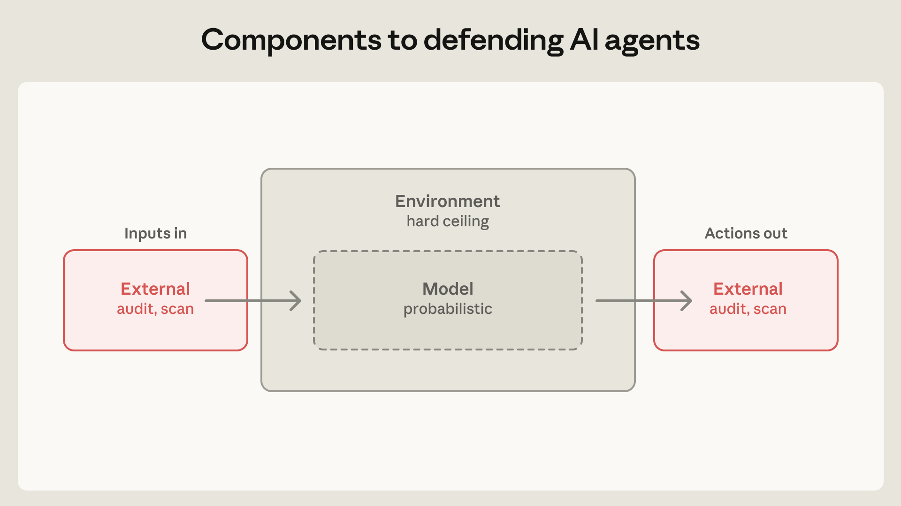
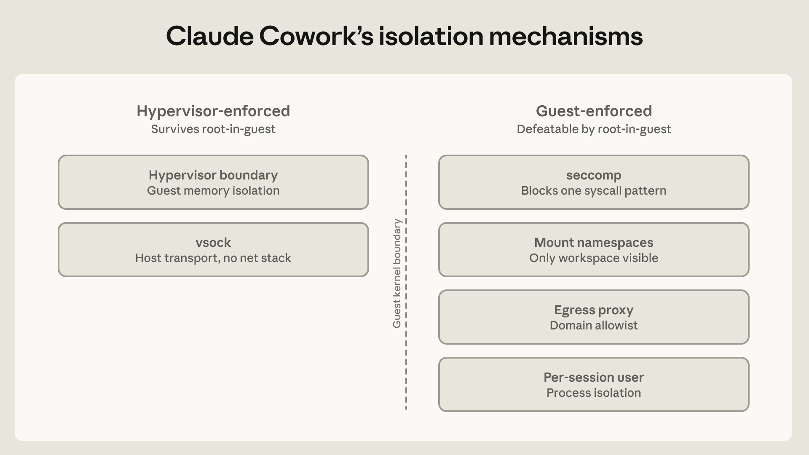
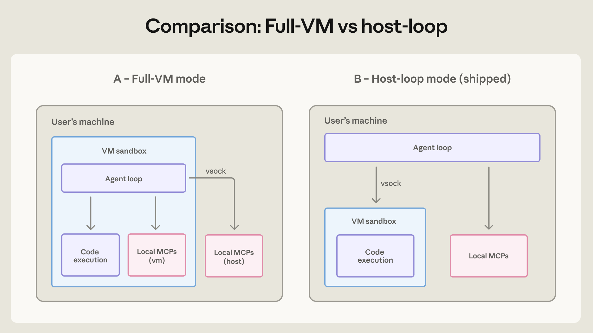
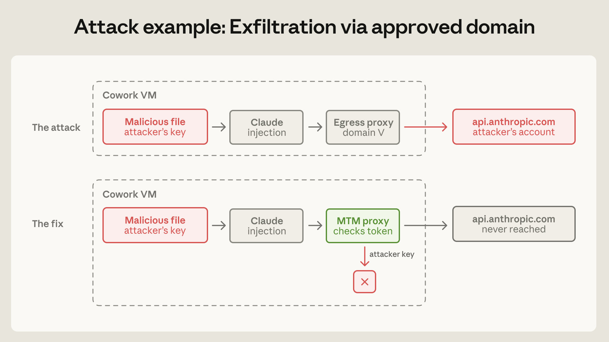

智能体能力越强，一旦出错或被滥用，造成的"爆炸半径"（blast radius）就越大。
是否上线，取决于三者的平衡：
- P(harm)：出问题的概率
- blast radius：出问题后的破坏范围
- reward：能带来的价值
把破坏范围牢牢控制住，高价值的能力才敢放心交付。

Anthropic 工程博客
当 AI 智能体越来越强大时，如何在保留它的能力的同时，
把它可能造成的破坏范围限制到最小
核心理念
智能体能力越强，一旦出错或被滥用，造成的"爆炸半径"（blast radius）就越大。
是否上线，取决于三者的平衡：
把破坏范围牢牢控制住，高价值的能力才敢放心交付。

威胁建模
用户主动引导智能体去完成有害任务。
模型自身做出非预期的、有害的行为。
利用工具、文件或网络访问发起攻击，例如提示注入。
防御组件

沙箱、虚拟机、文件系统边界、出口流量控制——确定性的硬上限。
系统提示、分类器、探针、训练——概率性的行为引导。
对工具权限做最小化授权，并审计连接器与输入输出。
三种产品形态
隔离强度，匹配用户的监督能力
模式一 · claude.ai
保护的是 Anthropic 自身基础设施 与租户隔离，而不是用户的机器——因为代码根本不在用户机器上跑。
模式二 · Claude Code
运行在用户本地机器上，拥有文件系统与 shell 访问权限。最初设计要求对写入、bash、网络操作逐一审批。
问题：用户几乎对所有提示都点了"同意"，产生严重的审批疲劳。
对策：叠加 OS 级沙箱（macOS Seatbelt、Linux bubblewrap）。
93%
权限提示被直接批准 → 审批形同虚设
↓84%
加入 OS 沙箱后，权限提示减少
两次真实教训
启动时解析项目配置（如 settings、CLAUDE.md）发生在用户授权之前，留下窗口期。
一份看似无害的"钓鱼"指令，成功在 25 次里有 24 次 窃取了 AWS 凭证。
关键启示：当模型层的防御被绕过时，环境层（出口控制、文件系统边界）是唯一仍然有效的防线。
模式三 · Claude Cowork
两道在客户机内核之外 可抵御 root 沦陷；四道客户机内 保持最小化。

架构演进

为了提升可靠性，智能体循环被移到虚拟机之外，而代码执行仍被牢牢隔离在内。
本地 MCP 服务器也移到 VM 外，便于审计和依赖管理。
安全没有妥协，可靠性反而更好。
攻击与修复

攻击：工作区里的恶意文件带着攻击者的 API key，借合法的 api.anthropic.com 把文件上传到攻击者账户。
修复：在 VM 内放一个防御性的中间人代理（MTM proxy），拦截并校验会话令牌，攻击者的 key 直接被拦下。
隔离的代价
把 Claude 关得越严，安全软件就越看不见里面发生了什么。
同样的隔离也挡住了端点检测（EDR）软件。改用基于 OTLP 的拉取式日志导出，让管理员仍能取到审计日志。
外部内容
MCP、连接器、网络工具既有传统供应链漏洞，又是提示注入的入口。
远端工具在批准后可能改变行为；本地工具才是可审计的。
即使来源可信，也要检查工具返回；代理会在内容进入上下文前先过一遍。
展望与原则
新出现的攻击面
产品记忆、CLAUDE.md、工作区等持久状态，带来新的持久化攻击向量。
隔离带来收益，但智能体间的通信也引入新的注入通道。
智能体该有独立身份，还是继承用户权限？尚无定论。
核心原则
先在环境层做控制，再在模型层做引导。确定性的边界能兜住概率性防御漏掉的失败。
让隔离强度匹配用户的监督能力。会读 bash 的开发者和普通知识工作者，需要不同的威胁模型。
慎用自研组件。久经考验的虚拟机管理程序和系统调用过滤器，比临时拼凑的安全层更耐久。